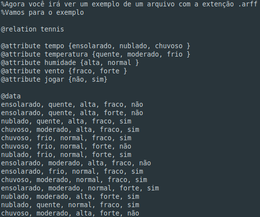
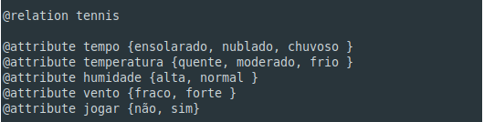
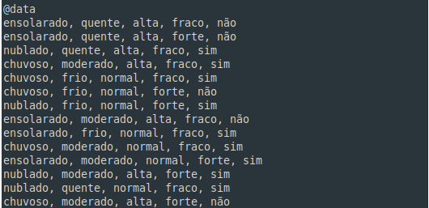
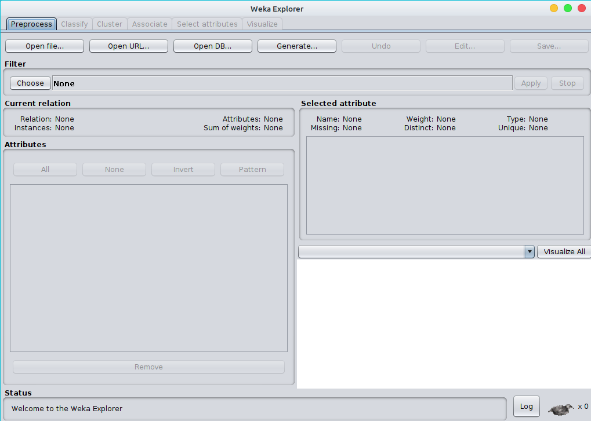
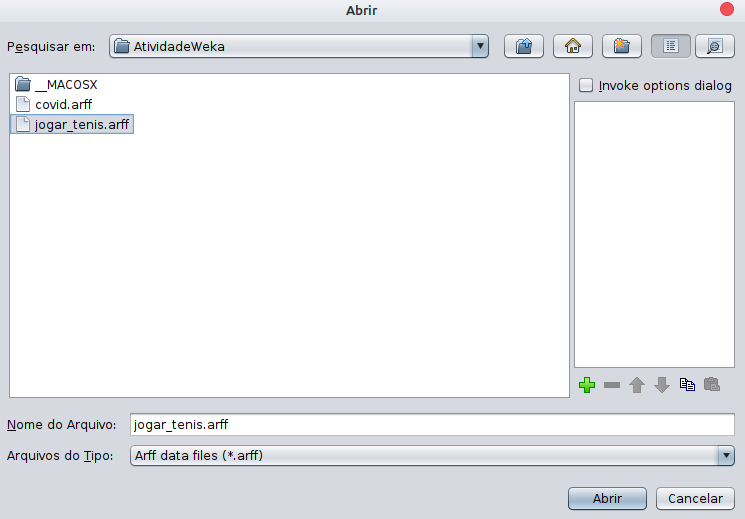
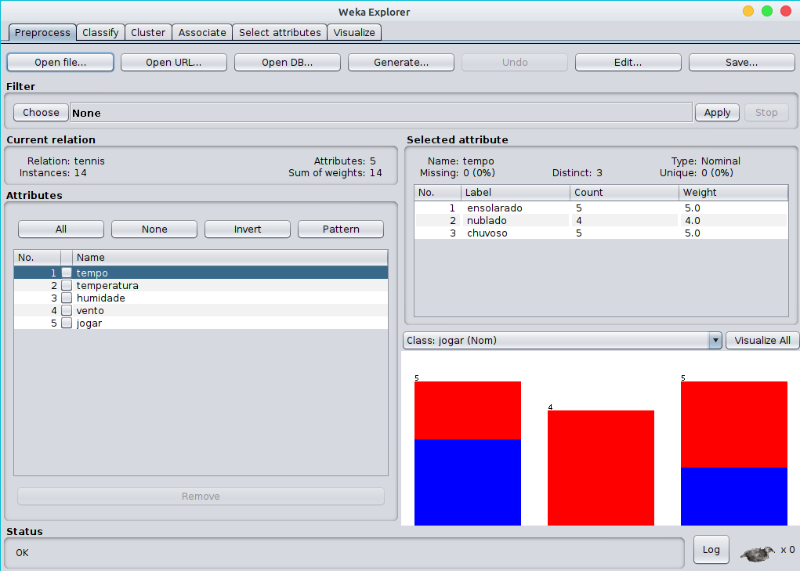
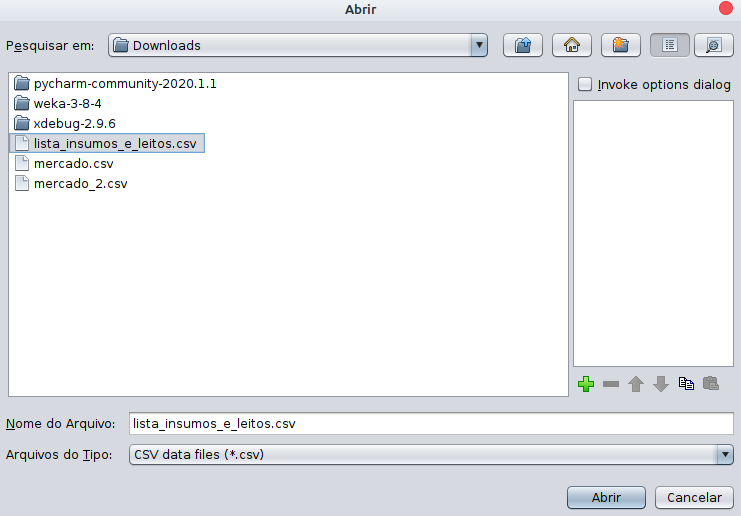
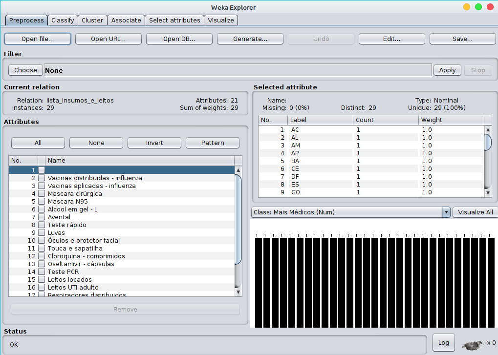

Criando um Arquivo .arff no Weka
Esse é um exemplo de um arquivo .arff
Essa primeira parte do arquivo,
como podemos observar é onde podemos fazer os comentários.
Agora vamos ver onde colocamos o nome do Dataset e dos Atributos. O @relation é onde será quardado o nome do Dataset.
@attribute é como o nome mesmo já diz os atributos, entre as chaves é onde será guardado as possibilidades que certo atributo irá ter. Como por exemplo @attribute tempo{ensolarado, nublado, chuvoso}, nesse exemplo estou dizendo que as possibilidades que o atributo clima terá é chuvoso, ensolarado e nublado, outro exemplo que podemos usar é @attribute temperatura{quente, moderado, frio}.
Essa parte do @data é onde colocamos os dados na relação, como por exemplo.
@data
ensolarado, quete
chuvoso, quete
nublado, quente
E assim em diante
Agora não se esqueça de salvar o arquivo com a extenção .arff
Agora para abrir o arquivo é necessário que selecione a opção Explorer.
Selecione a opção Open file.
Selecione o arquivo desejado e clique em abrir.
Se tudo ocorreu conforme as imagens acima,
será aberta essa página onde será possível examinar os dados.
Vizualizando um arquivo .csv
Já vimos como fazer um arquivo .arff e como abri-lo. Agora vamos vizualizar um arquivo .csv, basicamente é o mesmo processo para abrir um arquivo .csv como é para abrir um .arff .
Primairamente abra a ferramenta Weka em seu computador, e selecione a opção Explorer.
Selecione a opção Open file.
Vá até o arquivo que deseja abrir e abra.
Após ter selecionado o arquivo .csv e clicado em abrir será exibida uma página com os dados do arquivo.
